DA3-Giant, VGGT-Ω и DUSt3R: облака точек на ETH3D и Tanks and Temples
Три монокулярных реконструктора — DUSt3R, DA3-Giant-1.1 и VGGT-Omega-1B — прогнаны локально на одинаковых наборах кадров, и их облака точек, глубина и позы сравнены с эталоном. У обоих наборов есть плотная схема: у ETH3D — 20 кадров на сцену вместо официальных 10, у Tanks and Temples — 100 вместо 16. На страницах ниже облака можно вращать и переключать между методами и лазерным сканом.
Сцены
По странице на сцену, всего 18 (5 — ETH3D, 10 кадров, 5 — ETH3D, 20 кадров, 4 — T&T, 16 кадров, 4 — T&T, 100 кадров). Разделы — схемы кадров (10 и 20 у ETH3D, 16 и 100 у T&T), в каждом одна строка —
одна сцена и три плитки в ней: DA3-Giant, VGGT-Ω и DUSt3R на одних и тех же кадрах. Плитка открывает страницу сразу в
нужном виде — нужный метод уже выбран. Подпись под плиткой — средняя ошибка положения камеры
(mean translation error) этого метода в этой схеме, в сантиметрах: расстояние от предсказанного
центра камеры до эталонного после sim(3), усреднённое по кадрам. Это единственное число, которое
определено для всех сцен, — у ignatius и meetingroom лазерного эталона нет, и F@1 там не посчитать;
при этом оно не зависит от того, сколько точек страница оставила в облаке. Точность самого облака
(F@1) — в таблицах ниже.
На самой странице облако переключается (GT, DA3-Giant, VGGT-Ω, DUSt3R или все предсказания), раскраска —
цветом пикселей или расстоянием до GT (зелёный — на поверхности, красный — дальше порога τ).
Мышь вращает, колесо зумит, правая кнопка сдвигает. Страница берёт рядом лежащие
three.min.js и двоичные облака из data/.
ETH3D: официальные 10 кадров


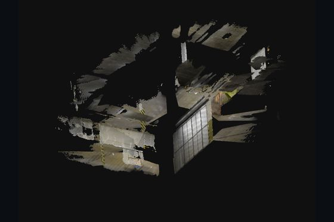
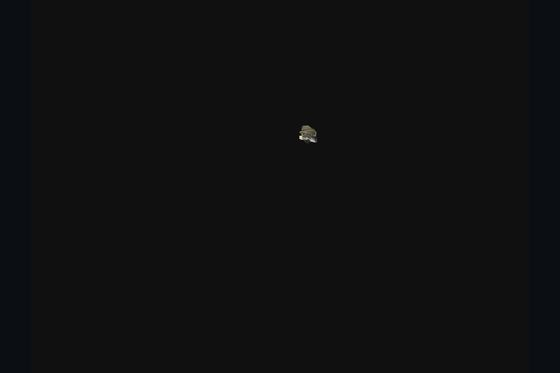


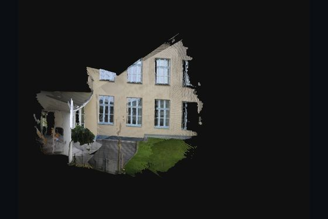
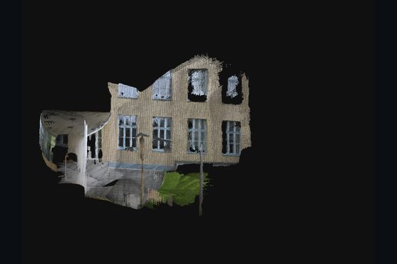
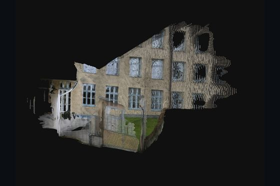
ETH3D: плотная схема, 20 кадров
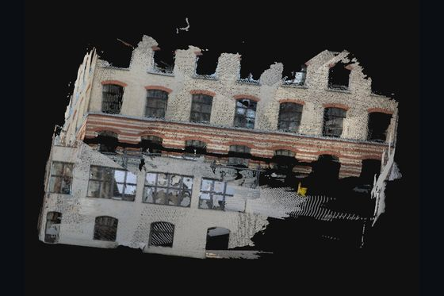
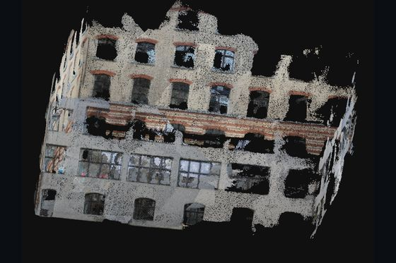
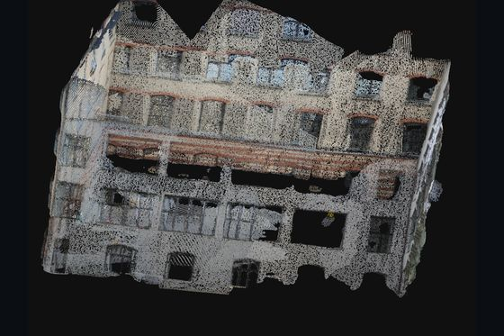
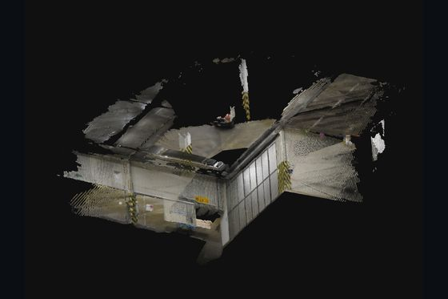
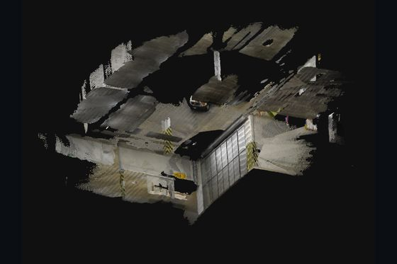
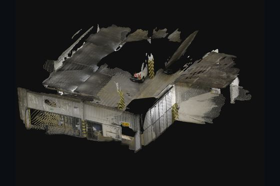

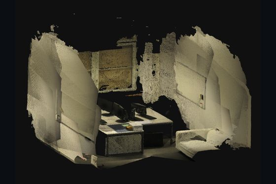
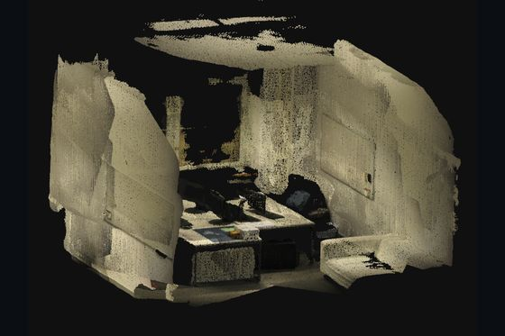
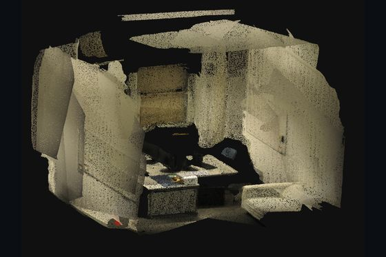
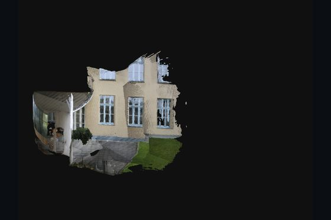
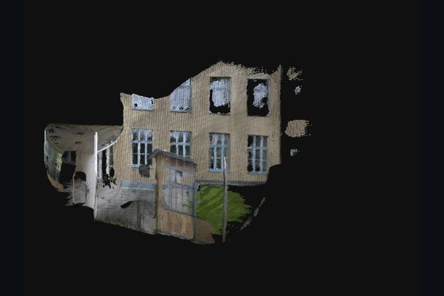
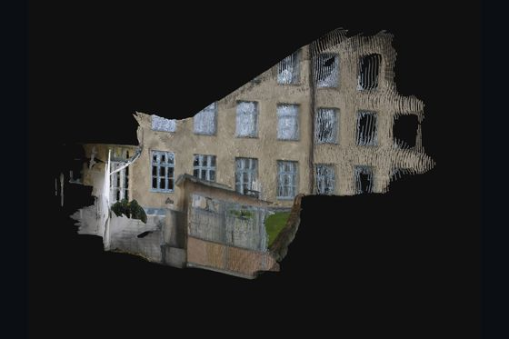
Tanks and Temples: 16 кадров
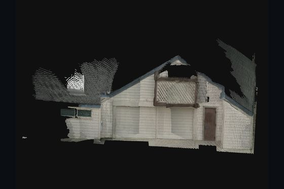
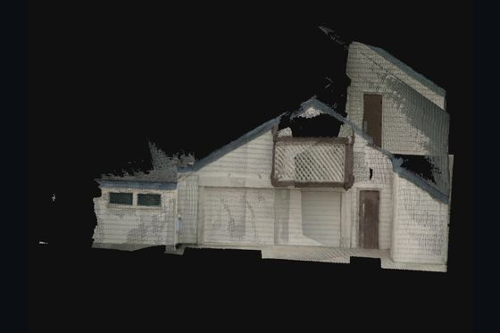
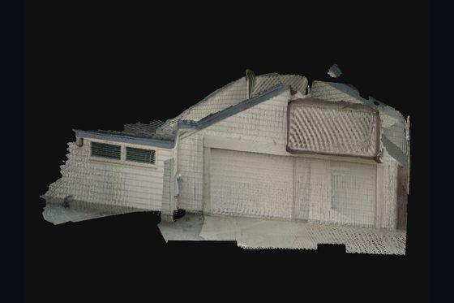
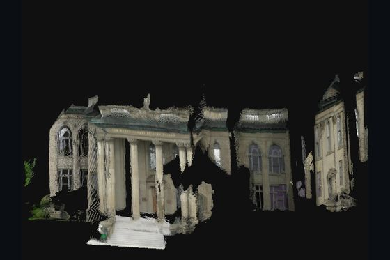

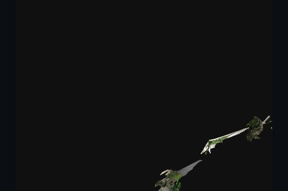
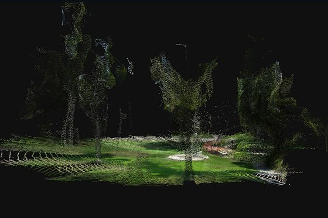
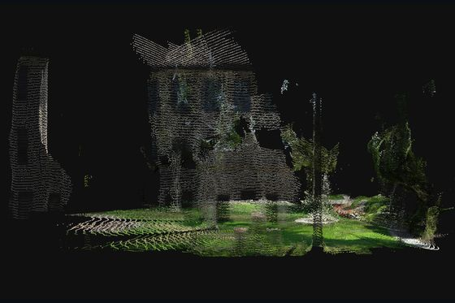
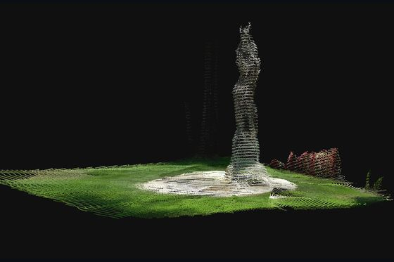


Tanks and Temples: плотная схема, 100 кадров


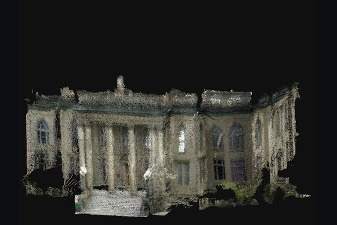

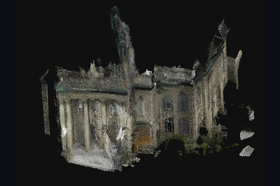


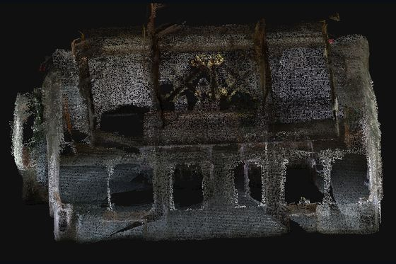
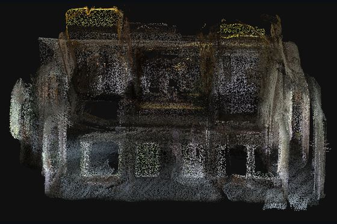
Что показано
ETH3D, 10 кадров
| сцена | метод | F@0.5% | F@1% | AbsRel (s+t) | позы камеры, см | rot, ° |
|---|---|---|---|---|---|---|
| courtyard | da3-giant | 0.931 | 0.966 | 0.0085 | 11.8 | 1.11 |
| courtyard | vggt-omega | 0.928 | 0.970 | 0.0056 | 10.5 | 0.55 |
| courtyard | dust3r | 0.881 | 0.963 | 0.0159 | 71.4 | 4.25 |
| delivery_area | da3-giant | 0.855 | 0.881 | 0.0273 | 53.6 | 6.86 |
| delivery_area | vggt-omega | 0.928 | 0.972 | 0.0112 | 20.5 | 2.91 |
| delivery_area | dust3r | 0.098 | 0.131 | 0.0378 | 252.8 | 145.12 |
| facade | da3-giant | 0.961 | 0.976 | 0.0105 | 16.8 | 0.43 |
| facade | vggt-omega | 0.965 | 0.979 | 0.0082 | 17.2 | 1.40 |
| facade | dust3r | 0.892 | 0.958 | 0.0315 | 134.2 | 4.34 |
| office | da3-giant | 0.807 | 0.937 | 0.0096 | 3.3 | 1.82 |
| office | vggt-omega | 0.898 | 0.966 | 0.0067 | 2.3 | 0.77 |
| office | dust3r | 0.667 | 0.843 | 0.0260 | 15.7 | 3.61 |
| terrace | da3-giant | 0.952 | 0.975 | 0.0268 | 7.2 | 1.30 |
| terrace | vggt-omega | 0.967 | 0.978 | 0.0059 | 2.8 | 0.44 |
| terrace | dust3r | 0.851 | 0.940 | 0.0349 | 18.3 | 1.93 |
ETH3D, 20 кадров (плотная схема)
| сцена | метод | F@0.5% | F@1% | AbsRel (s+t) | позы камеры, см | rot, ° |
|---|---|---|---|---|---|---|
| courtyard | da3-giant | 0.867 | 0.914 | 0.0076 | 4.9 | 0.57 |
| courtyard | vggt-omega | 0.862 | 0.920 | 0.0051 | 5.6 | 0.33 |
| courtyard | dust3r | 0.591 | 0.831 | 0.0159 | 99.0 | 2.39 |
| delivery_area | da3-giant | 0.850 | 0.879 | 0.0207 | 26.5 | 12.60 |
| delivery_area | vggt-omega | 0.950 | 0.971 | 0.0101 | 5.7 | 0.87 |
| delivery_area | dust3r | 0.782 | 0.871 | 0.0350 | 132.5 | 13.43 |
| facade | da3-giant | 0.947 | 0.970 | 0.0106 | 9.8 | 0.39 |
| facade | vggt-omega | 0.937 | 0.970 | 0.0081 | 19.7 | 0.90 |
| facade | dust3r | 0.829 | 0.922 | 0.0291 | 137.8 | 2.08 |
| office | da3-giant | 0.818 | 0.854 | 0.0061 | 1.6 | 0.86 |
| office | vggt-omega | 0.879 | 0.936 | 0.0049 | 1.5 | 0.51 |
| office | dust3r | 0.491 | 0.762 | 0.0235 | 17.1 | 5.81 |
| terrace | da3-giant | 0.936 | 0.971 | 0.0236 | 5.4 | 0.90 |
| terrace | vggt-omega | 0.961 | 0.976 | 0.0055 | 2.3 | 0.43 |
| terrace | dust3r | 0.834 | 0.934 | 0.0386 | 22.7 | 2.41 |
ETH3D: 10 → 20 кадров, что изменилось
| сцена | метод | F@1%, 10 → 20 | prec@1%, 10 → 20 | rec@1%, 10 → 20 | позы камеры, см, 10 → 20 | rot, °, 10 → 20 | F@1%, GT 20 |
|---|---|---|---|---|---|---|---|
| courtyard | da3-giant | 0.966 → 0.914 | 0.989 → 0.871 | 0.944 → 0.960 | 11.8 → 4.9 | 1.11 → 0.57 | 0.967 |
| courtyard | vggt-omega | 0.970 → 0.920 | 0.994 → 0.866 | 0.948 → 0.981 | 10.5 → 5.6 | 0.55 → 0.33 | 0.983 |
| courtyard | dust3r | 0.963 → 0.831 | 0.980 → 0.741 | 0.946 → 0.945 | 71.4 → 99.0 | 4.25 → 2.39 | 0.920 |
| delivery_area | da3-giant | 0.881 → 0.879 | 0.998 → 0.966 | 0.789 → 0.806 | 53.6 → 26.5 | 6.86 → 12.60 | 0.884 |
| delivery_area | vggt-omega | 0.972 → 0.971 | 0.987 → 0.967 | 0.958 → 0.975 | 20.5 → 5.7 | 2.91 → 0.87 | 0.984 |
| delivery_area | dust3r | 0.131 → 0.871 | 1.000 → 0.918 | 0.070 → 0.829 | 252.8 → 132.5 | 145.12 → 13.43 | 0.894 |
| facade | da3-giant | 0.976 → 0.970 | 0.986 → 0.946 | 0.967 → 0.996 | 16.8 → 9.8 | 0.43 → 0.39 | 0.998 |
| facade | vggt-omega | 0.979 → 0.970 | 0.988 → 0.943 | 0.969 → 0.998 | 17.2 → 19.7 | 1.40 → 0.90 | 0.998 |
| facade | dust3r | 0.958 → 0.922 | 0.955 → 0.878 | 0.960 → 0.971 | 134.2 → 137.8 | 4.34 → 2.08 | 0.928 |
| office | da3-giant | 0.937 → 0.854 | 0.954 → 0.880 | 0.919 → 0.829 | 3.3 → 1.6 | 1.82 → 0.86 | 0.893 |
| office | vggt-omega | 0.966 → 0.936 | 0.969 → 0.917 | 0.963 → 0.956 | 2.3 → 1.5 | 0.77 → 0.51 | 0.951 |
| office | dust3r | 0.843 → 0.762 | 0.824 → 0.722 | 0.863 → 0.807 | 15.7 → 17.1 | 3.61 → 5.81 | 0.800 |
| terrace | da3-giant | 0.975 → 0.971 | 0.975 → 0.967 | 0.976 → 0.975 | 7.2 → 5.4 | 1.30 → 0.90 | 0.972 |
| terrace | vggt-omega | 0.978 → 0.976 | 0.976 → 0.972 | 0.980 → 0.981 | 2.8 → 2.3 | 0.44 → 0.43 | 0.976 |
| terrace | dust3r | 0.940 → 0.934 | 0.911 → 0.899 | 0.971 → 0.972 | 18.3 → 22.7 | 1.93 → 2.41 | 0.938 |
Tanks and Temples, 16 кадров
| сцена | метод | F@0.5% | F@1% | точн. мед., см | позы камеры, см | rot, ° |
|---|---|---|---|---|---|---|
| barn | da3-giant | 0.462 | 0.677 | 10.6 | 3.2 | 0.48 |
| barn | vggt-omega | 0.527 | 0.767 | 10.7 | 3.1 | 0.64 |
| barn | dust3r | 0.048 | 0.108 | 131.6 | 46.3 | 11.31 |
| courthouse | da3-giant | 0.276 | 0.423 | 86.7 | 11.0 | 3.51 |
| courthouse | vggt-omega | 0.028 | 0.055 | 384.3 | 149.2 | 47.32 |
| courthouse | dust3r | 0.010 | 0.029 | 368.7 | 121.1 | 150.70 |
| ignatius | da3-giant | — | — | — | 3.2 | 0.54 |
| ignatius | vggt-omega | — | — | — | 3.1 | 0.44 |
| ignatius | dust3r | — | — | — | 17.1 | 1.38 |
| meetingroom | da3-giant | — | — | — | 2.0 | 0.46 |
| meetingroom | vggt-omega | — | — | — | 2.3 | 0.54 |
| meetingroom | dust3r | — | — | — | 11.5 | 1.40 |
Tanks and Temples, 100 кадров
| сцена | метод | F@0.5% | F@1% | точн. мед., см | позы камеры, см | rot, ° |
|---|---|---|---|---|---|---|
| barn | da3-giant | 0.622 | 0.890 | 12.9 | 2.5 | 0.39 |
| barn | vggt-omega | 0.650 | 0.918 | 12.2 | 2.6 | 0.55 |
| barn | dust3r | 0.366 | 0.619 | 27.6 | 10.0 | 3.38 |
| courthouse | da3-giant | 0.417 | 0.619 | 51.6 | 3.6 | 1.69 |
| courthouse | vggt-omega | 0.428 | 0.586 | 42.1 | 21.7 | 3.68 |
| courthouse | dust3r | 0.238 | 0.332 | 65.8 | 26.7 | 10.12 |
| ignatius | da3-giant | — | — | — | 4.6 | 0.81 |
| ignatius | vggt-omega | — | — | — | 2.5 | 0.36 |
| ignatius | dust3r | — | — | — | 22.5 | 2.30 |
| meetingroom | da3-giant | — | — | — | 1.6 | 0.32 |
| meetingroom | vggt-omega | — | — | — | 2.0 | 0.23 |
| meetingroom | dust3r | — | — | — | 25.7 | 2.97 |
Кадров 16 → 100: что изменилось
| сцена | метод | F@1%, % | точн. мед., см | позы камеры, см | rot, ° |
|---|---|---|---|---|---|
| barn | da3-giant | 0.677 → 0.890 | 10.6 → 12.9 | 3.2 → 2.5 | 0.48 → 0.39 |
| barn | vggt-omega | 0.767 → 0.918 | 10.7 → 12.2 | 3.1 → 2.6 | 0.64 → 0.55 |
| barn | dust3r | 0.108 → 0.619 | 131.6 → 27.6 | 46.3 → 10.0 | 11.31 → 3.38 |
| courthouse | da3-giant | 0.423 → 0.619 | 86.7 → 51.6 | 11.0 → 3.6 | 3.51 → 1.69 |
| courthouse | vggt-omega | 0.055 → 0.586 | 384.3 → 42.1 | 149.2 → 21.7 | 47.32 → 3.68 |
| courthouse | dust3r | 0.029 → 0.332 | 368.7 → 65.8 | 121.1 → 26.7 | 150.70 → 10.12 |
| ignatius | da3-giant | — → — | — → — | 3.2 → 4.6 | 0.54 → 0.81 |
| ignatius | vggt-omega | — → — | — → — | 3.1 → 2.5 | 0.44 → 0.36 |
| ignatius | dust3r | — → — | — → — | 17.1 → 22.5 | 1.38 → 2.30 |
| meetingroom | da3-giant | — → — | — → — | 2.0 → 1.6 | 0.46 → 0.32 |
| meetingroom | vggt-omega | — → — | — → — | 2.3 → 2.0 | 0.54 → 0.23 |
| meetingroom | dust3r | — → — | — → — | 11.5 → 25.7 | 1.40 → 2.97 |
Лучшее значение в каждой колонке выделено жирным. ETH3D: 5 сцен со зданиями, 10 кадров — официальный протокол, 20 — плотная схема на тех же камерах. Tanks and Temples: 4 сцены в двух схемах — 16 и 100 кадров, лазерный GT есть только у barn и courthouse — у ignatius и meetingroom остаются позы. В таблицах сравнения одна ячейка показывает пару «10 → 20» или «16 → 100». Подпись под плиткой — «позы камеры: X см» (mean translation error), а не F@1: она определена для всех сцен, включая ignatius и meetingroom без лазерного эталона. Падение F@1% у плотной схемы ETH3D против 10-кадрового эталона — не деградация: лишние кадры видят поверхность, которой в эталоне нет, и она засчитывается как ошибка. Поэтому последняя колонка — F@1% против эталона, пересобранного из тех же 20 кадров: на нём точность (precision) растёт. DUSt3R — попарная модель: за один forward она видит два кадра, и глобальная согласованность появляется только из оптимизатора облаков (init='mst', 300 итераций), поэтому на разреженных схемах (10–16 кадров) его позы заметно хуже, чем у DA3 и VGGT-Ω: у него нет ни глобального внимания на все кадры, ни механизма склейки длинных базисов. Числа в таблицах — как есть, без подгонки под методы и без ICP на Tanks and Temples.
Как это посчитано
Облако предсказания приводится в систему координат эталона через sim(3) по центрам камер (Umeyama), на ETH3D дополнительно уточняется ICP. F-score считается при порогах 0.5 % и 1 % диагонали эталонного облака. Для Tanks and Temples облако обрезано официальным полигоном GT и выровнено только по позам — без ICP; «точн. мед.» — медианное расстояние от точки предсказания до ближайшей точки лазерного скана. Порог τ — это 1 % диагонали эталонного облака, то есть конкретная длина в метрах, своя у каждой сцены: 7.4 см на office, 26 см на barn, 43 см на courtyard, 59 см на terrace, 79 см на delivery_area, 89 см на courthouse, 94 см на facade. Доля, а не абсолютное число, потому что 1 см на office — это 0.14 % сцены, а на facade — 0.01 %. Тот же τ стоит на шкале под раскраской в просмотрщике и в подписи рисунков облаков (цвет = clip(расстояние / τ, 0, 1)), поэтому шкала, рисунки и F@1 всегда говорят об одном пороге. «позы камеры, см» — mean translation error по позам: средняя по кадрам длина сдвига между предсказанным и эталонным центром камеры после того же sim(3), в сантиметрах (эталонные позы обоих наборов метрические, поэтому доля диагонали бокса GT-камер превращается в длину). Это метрика только поз: плотность облака и бюджет страницы на неё не влияют.